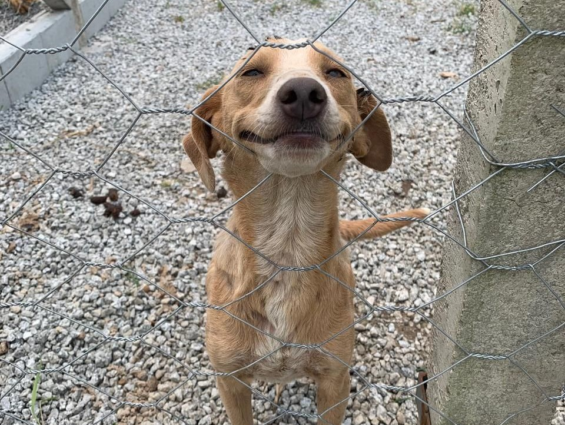
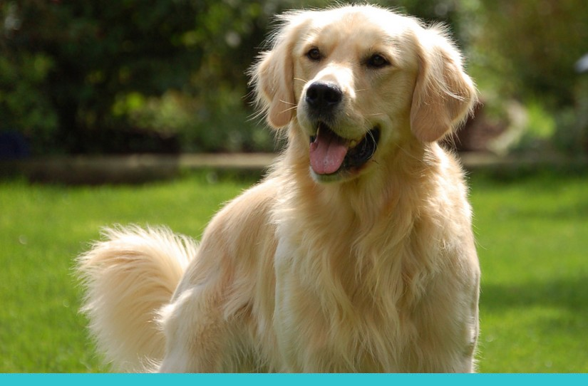
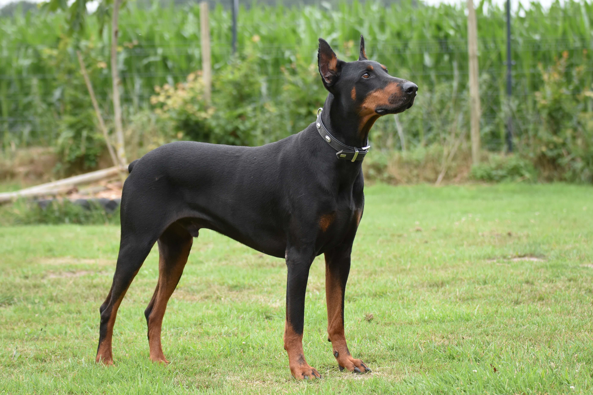
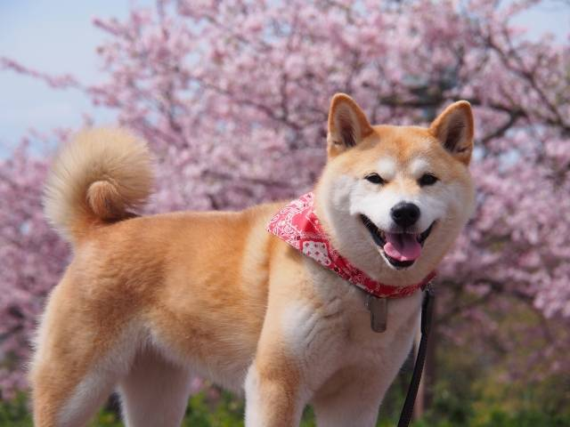

Página para ver alguns cachorrinhos fofos
Óbvio que precisamos começar com o cachorro mais brasileiro de todos: o caramelo!
Vamos continuar na mesma paleta de cores e ver um carinhoso, mas bem bagunceiro golden!
Por falar em bagunceiro, já viram um spitz alemão? Também conhecido como lulu da pomerânia, é muito fofo, mas dizem que é super arteiro!

Vamos mudar um pouco e ir para o dobermann, um cachorro que muitos consideram assustador, mas... se é assustador e perigoso por que parece perfeito para receber carinhos?
Qual o cachorro favorito de vocês? O Shiba Inu é com certeza um dos meus favoritos
E outro dos meus cachorros favoritos é o Husky! Além de muito bonitos, eu também acho eles muito barulhentos e engraçados. Aqui está um vídeo de alguns Huskies fazendo Huskyces!